Passengers
How Zongo Ride Helps Passengers Find Local Drivers
Useful guidance on local drivers for the Zongo Ride community.
Read the guide →FOR DRIVERS · FOR PASSENGERS
Explore practical guides for finding local drivers, publishing routes, planning trips and making ride requests with clearer expectations.
Route availability and features depend on the current service coverage. Always confirm trip details before travelling.
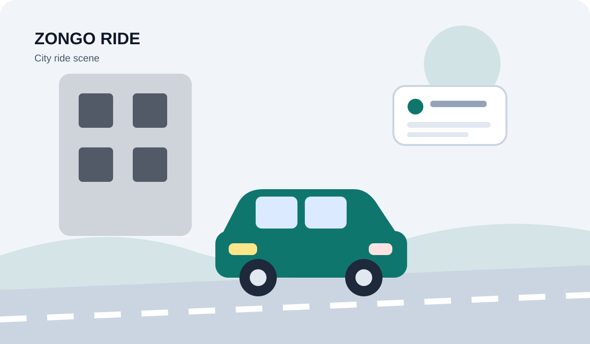
THE ZONGO RIDE BLOG
Search the library and choose a guide that matches your journey.
Useful guidance on local drivers for the Zongo Ride community.
Read the guide →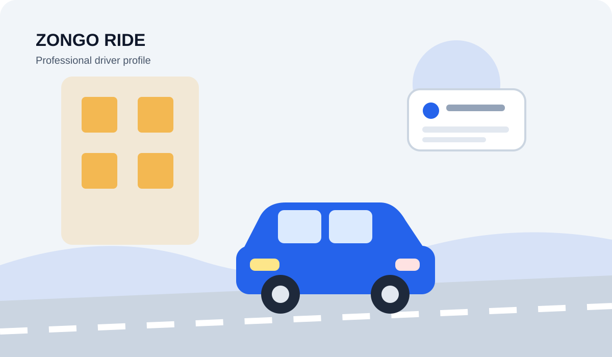
Useful guidance on driver registration for the Zongo Ride community.
Read the guide →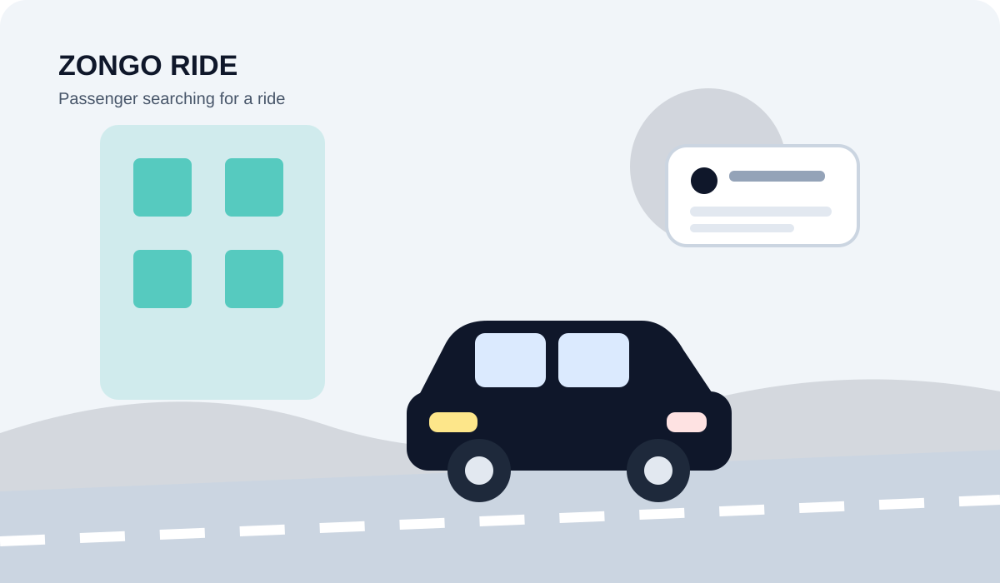
Useful guidance on find a ride for the Zongo Ride community.
Read the guide →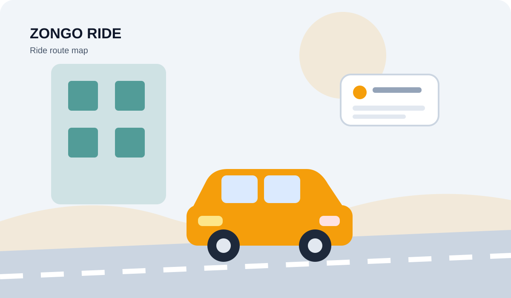
Useful guidance on driver routes and prices for the Zongo Ride community.
Read the guide →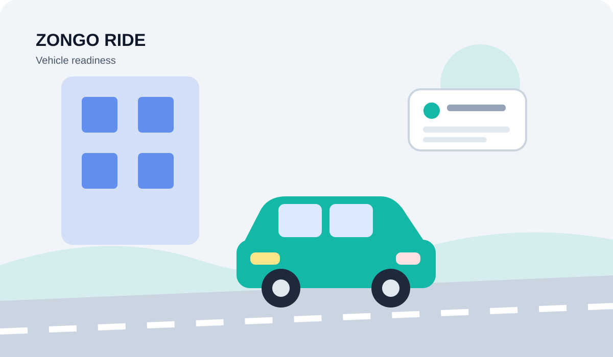
Useful guidance on safe ride booking for the Zongo Ride community.
Read the guide →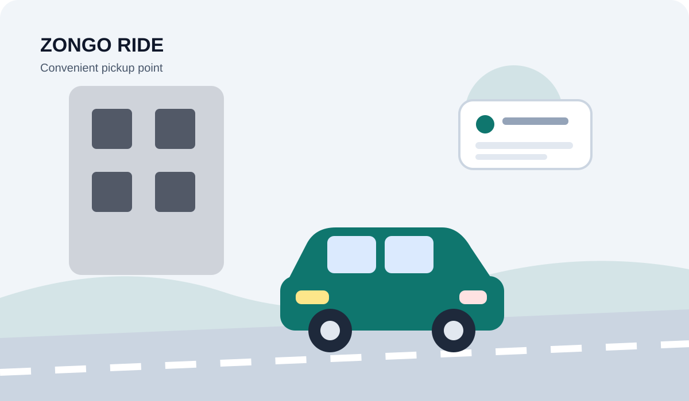
Useful guidance on independent ride driver for the Zongo Ride community.
Read the guide →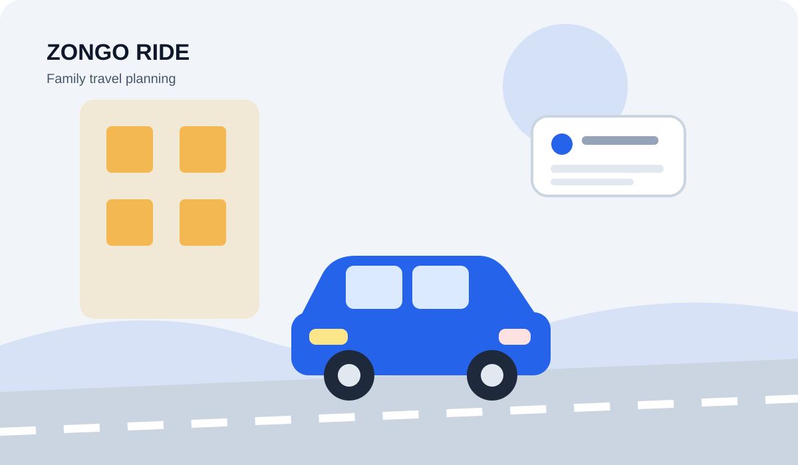
Useful guidance on local ride discovery for the Zongo Ride community.
Read the guide →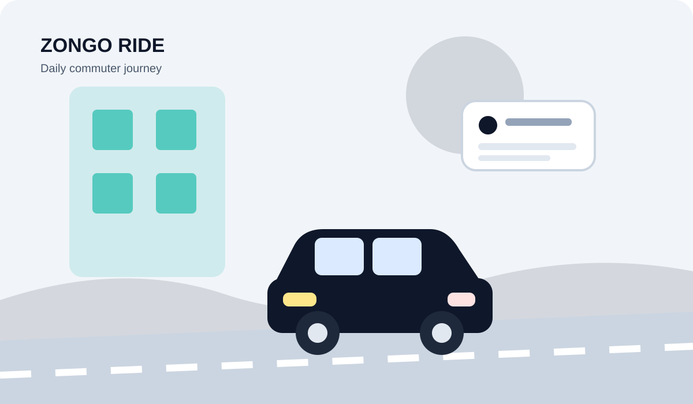
Useful guidance on driver profile for the Zongo Ride community.
Read the guide →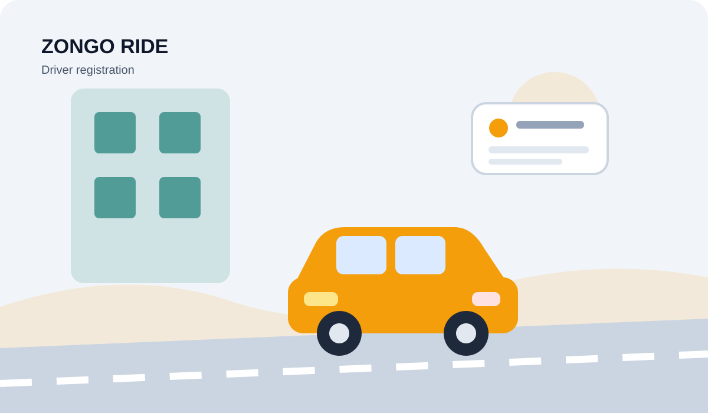
Useful guidance on daily commute for the Zongo Ride community.
Read the guide →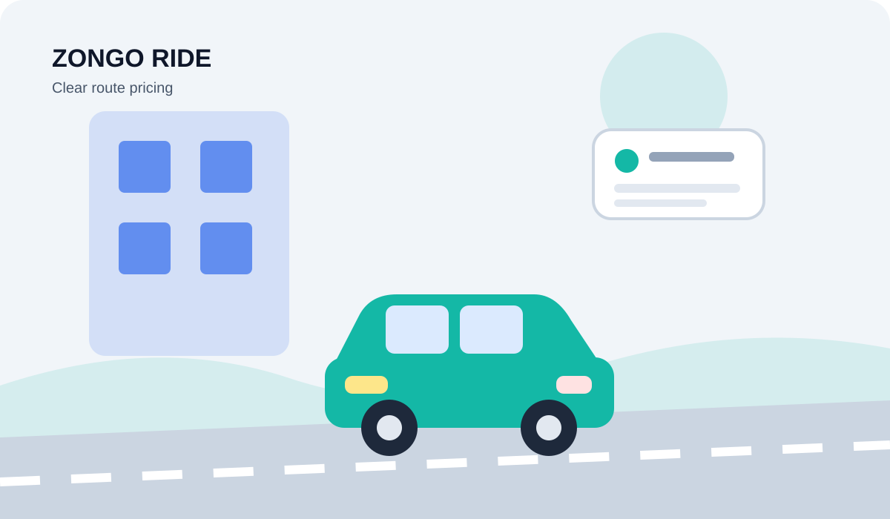
Useful guidance on passenger trust for the Zongo Ride community.
Read the guide →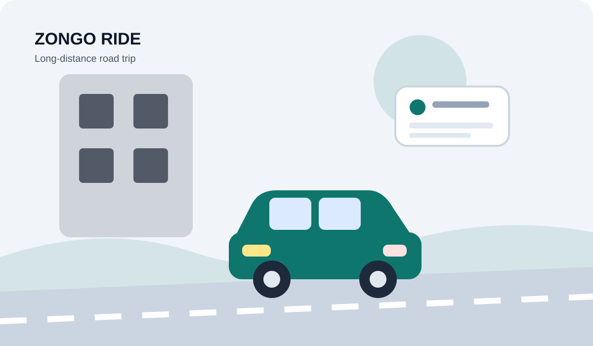
Useful guidance on online drivers for the Zongo Ride community.
Read the guide →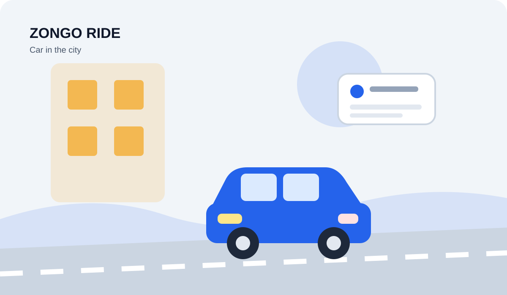
Useful guidance on driver registration documents for the Zongo Ride community.
Read the guide →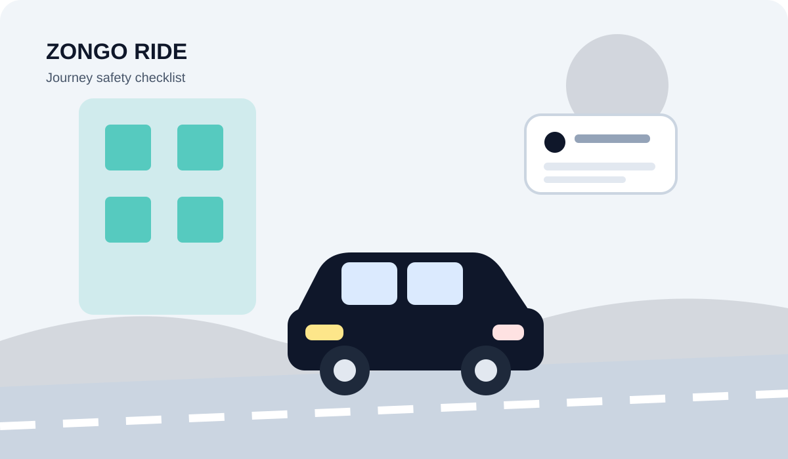
Useful guidance on compare ride routes for the Zongo Ride community.
Read the guide →
Useful guidance on Zongo Ride for the Zongo Ride community.
Read the guide →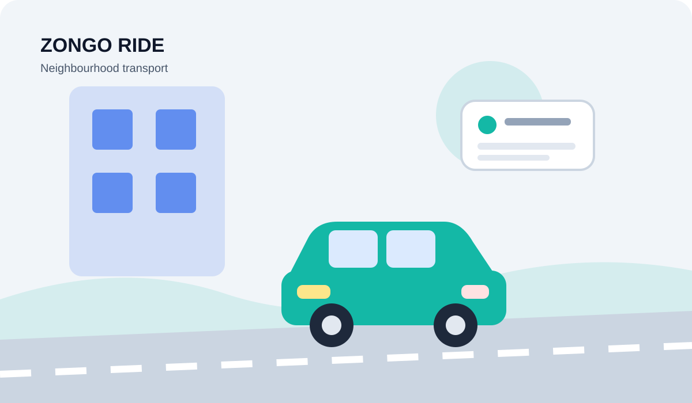
Useful guidance on multiple ride routes for the Zongo Ride community.
Read the guide →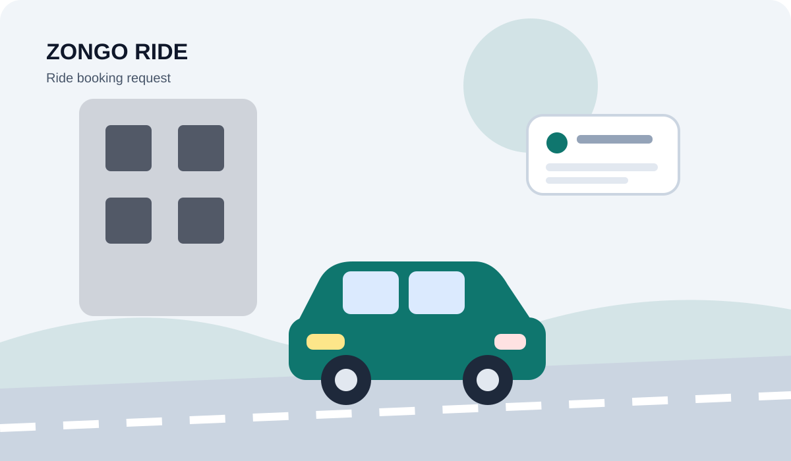
Useful guidance on booking request for the Zongo Ride community.
Read the guide →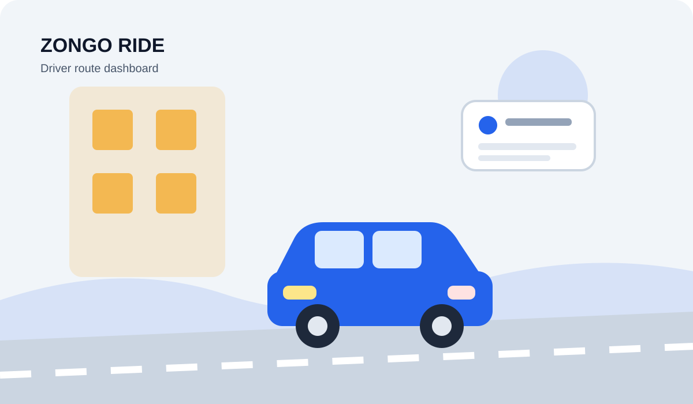
Useful guidance on local ride connections for the Zongo Ride community.
Read the guide →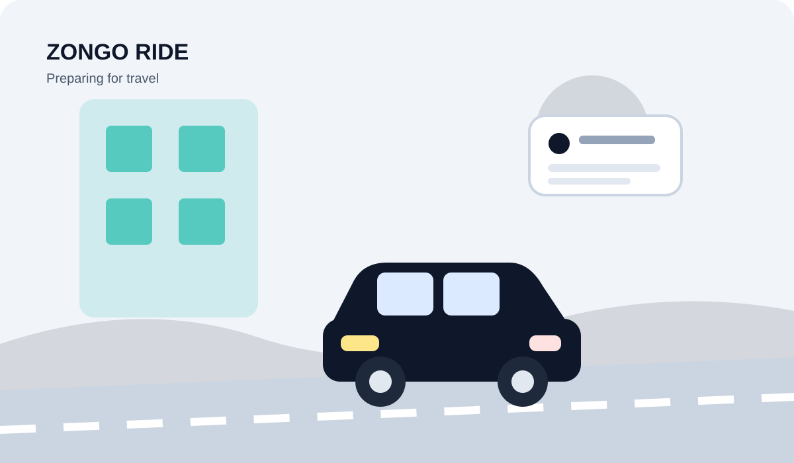
Useful guidance on long-distance ride for the Zongo Ride community.
Read the guide →
Useful guidance on vehicle readiness for the Zongo Ride community.
Read the guide →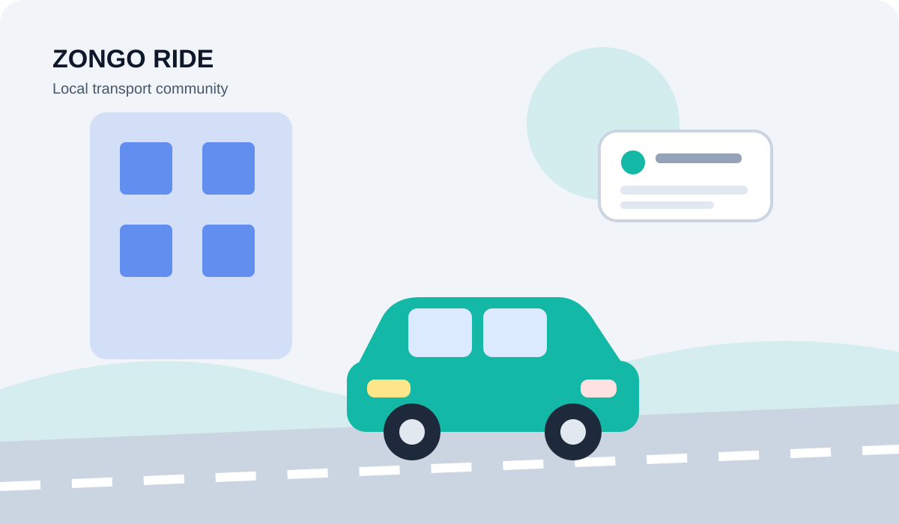
Useful guidance on pickup point for the Zongo Ride community.
Read the guide →Useful guidance on route information for the Zongo Ride community.
Read the guide →Useful guidance on commuter ride booking for the Zongo Ride community.
Read the guide →Useful guidance on driver account details for the Zongo Ride community.
Read the guide →Useful guidance on ride request for the Zongo Ride community.
Read the guide →Useful guidance on route listings for the Zongo Ride community.
Read the guide →Useful guidance on city-to-city travel for the Zongo Ride community.
Read the guide →Useful guidance on first ride booking for the Zongo Ride community.
Read the guide →Useful guidance on online driver profile for the Zongo Ride community.
Read the guide →Useful guidance on ride safety tips for the Zongo Ride community.
Read the guide →Useful guidance on transport in a new neighbourhood for the Zongo Ride community.
Read the guide →Useful guidance on route pricing for the Zongo Ride community.
Read the guide →Useful guidance on ride search tips for the Zongo Ride community.
Read the guide →Useful guidance on driver work schedule for the Zongo Ride community.
Read the guide →Useful guidance on family travel planning for the Zongo Ride community.
Read the guide →Useful guidance on pickup and destination details for the Zongo Ride community.
Read the guide →Useful guidance on new driver checklist for the Zongo Ride community.
Read the guide →Useful guidance on local ride platform for the Zongo Ride community.
Read the guide →Useful guidance on vehicle preparation for the Zongo Ride community.
Read the guide →Useful guidance on busy travel times for the Zongo Ride community.
Read the guide →Useful guidance on update ride routes for the Zongo Ride community.
Read the guide →Useful guidance on simple ride booking for the Zongo Ride community.
Read the guide →Useful guidance on ride communication for the Zongo Ride community.
Read the guide →Useful guidance on driver service expectations for the Zongo Ride community.
Read the guide →Useful guidance on return journey planning for the Zongo Ride community.
Read the guide →Useful guidance on transport across regions for the Zongo Ride community.
Read the guide →Useful guidance on passenger checklist for the Zongo Ride community.
Read the guide →Useful guidance on consistent driving routine for the Zongo Ride community.
Read the guide →Useful guidance on available drivers for the Zongo Ride community.
Read the guide →Useful guidance on Zongo Ride account for the Zongo Ride community.
Read the guide →Useful guidance on book a ride online for the Zongo Ride community.
Read the guide →Visit Zongo Ride to explore the service, check available routes or begin the relevant registration process.
Continue to Zongo RideDiscover more. Connect. Explore. Experience.
Looking for more opportunities, services, businesses and useful connections? Visit our main website and discover everything ZONGO has to offer.
VISIT ZONGO.SHOP →